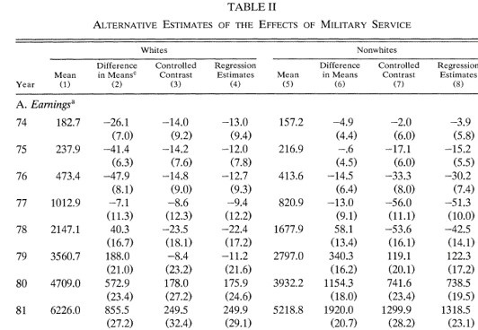
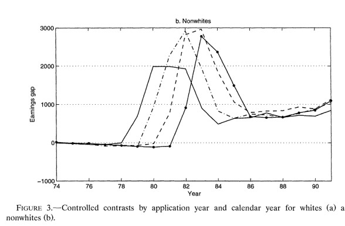

# A tibble: 10 × 3
unit_treat age_treat earnings_treat
<dbl> <dbl> <dbl>
1 1 18 9500
2 2 29 12250
3 3 24 11000
4 4 27 11750
5 5 33 13250
6 6 22 10500
7 7 19 9750
8 8 20 10000
9 9 21 10250
10 10 30 12500Métodos de emparejamiento
Irvin Rojas
Sesgo de selección
Las razones que determinan la asignación del tratamiento pueden también determinar el valor de \(Y\). Entonces, una comparación observacional nos da el efecto del tratamiento más el sesgo de selección:
\[ \begin{aligned} E(y_i|D_i=1)-E(y_i|D_i=0)=&\overbrace{ E(y_{1i}|D_i=1)-E(y_{0i}|D_i=1)}^{\text{Efecto promedio en los tratados}}+\\& \underbrace{E(y_{0i}|D_i=1)-E(y_{oi}|D_i=0)}_{\text{Sesgo de selección}} \end{aligned} \]
Una forma de eliminar el sesgo de selección es mediante la asignación aleatoria del tratamiento; sin embargo, esto no siempre es posible por lo que recurrimos a supuestos para eliminar el sesgo de selección.
Supuesto de independencia
El supuesto de independencia condicional dice que al controlar por una serie de características \(X_i\), el tratamiento es como si fuera aleatorio:
\[ E(Y(1)|D=1,X)=E(Y(1)|D=0,X) \]
\[ E(Y(0)|D=1,X)=E(Y(0)|D=0,X) \]
Esto es, los valores esperados de \(Y(1)\) y \(Y(0)\) son iguales cuando nos fijamos en cada valor de \(X\).
Matching exacto
Matching exacto
Un estimador de matching exacto consiste en emparejar individuos tratados y no tratados para cada valor específico de las \(X\) y luego tomar el promedio ponderado de las diferencias.
Tenemos datos observacionales de individuos que recibieron y no recibieron un tratamiento y tenemos una serie de características discretizadas en \(X_i\).
Asumimos que controlando por las características \(X_i\) podemos obtener diferencias causales y luego hacemos un promedio de dichas diferencias.
Ejemplo: programa hipotético de empleo
Usemos el ejemplo de MT (The Mixtape):
read_data <- function(df)
{
full_path <- paste("https://raw.github.com/scunning1975/mixtape/master/",
df, sep = "")
df <- read_dta(full_path)
return(df)
}
training_example <- read_data("training_example.dta") %>%
slice(1:20)
data.treat <- training_example %>%
select(unit_treat, age_treat, earnings_treat) %>%
slice(1:10) %>%
mutate(earnings_treat=as.numeric(earnings_treat))
data.control <- training_example %>%
select(unit_control, age_control, earnings_control)
data.matched <- training_example %>%
select(unit_matched, age_matched, earnings_matched) %>%
slice(1:10)Ejemplo: programa hipotético de empleo
Los individuos tratados:
Mientras que los no tratados:
# A tibble: 20 × 3
unit_control age_control earnings_control
<dbl> <dbl> <dbl>
1 1 20 8500
2 2 27 10075
3 3 21 8725
4 4 39 12775
5 5 38 12550
6 6 29 10525
7 7 39 12775
8 8 33 11425
9 9 24 9400
10 10 30 10750
11 11 33 11425
12 12 36 12100
13 13 22 8950
14 14 18 8050
15 15 43 13675
16 16 39 12775
17 17 19 8275
18 18 30 9000
19 19 51 15475
20 20 48 14800Comparación observacional
Si hiciéramos diferencias simples obtendríamos:
[1] 11075[1] 11101.25[1] -26.25Parece que en el grupo de control ganan más (efecto de tratamiento negativo).
El principal problema con esta diferencia es que sabemos que los ingresos crecen con la edad. Pero notemos que la muestra de no tratados tiene mayor edad promedio:
[1] 24.3[1] 31.95[1] -7.65Es decir, estaríamos confundiendo el efecto de la edad.
Muestra emparejada
Construyamos la muestra apareada: para cada individuo en el grupo tratado, buscaremos uno en el de control que tenga la misma edad. Cuando le encontramos un individuo no tratado al tratado con la misma edad decimos que esa pareja hizo match.
Por ejemplo, la primera unidad tratada, con 18 años y un ingreso de 9500 estaría emparejada con la unidad 14 del grupo de control, que tiene también 18 años y un ingreso de 8050.
Para dicho individuo de 18 años, su ingreso contrafactual sería 8050.
Cuando hay varias unidades en el grupo de control que pueden ser empatadas con la de tratamiento, podemos construir el ingreso contrafactual calculando el promedio.
Del grupo de control, los individuos 10 y 18 tienen 30 años, con ingresos 10750 y 9000, por lo que usamos el promedio (9875) para crear el contrafactual del individuo tratado de 30 años de la fila 10.
Muestra emparejada
La muestra emparejada o contrafactual será:
Muestra emparejada
Noten que la edad es la misma entre los tratados y la muestra apareada:
En este caso, decimos que la edad está balanceada.
Y entonces podemos calcular el efecto de tratamiento como la diferencia de ingresos entre los tratados y los no tratados en la muestra emparejada:
En este caso, encontramos un efecto positivo del programa de 1695 unidades monetarias.
Estimador de matching exacto
Lo anterior nos permite definir el estimador de matching exacto del TOT como:
\[\hat{\delta}_{TOT}=\frac{1}{N_T}\sum_{D_i=1}\left(Y_i-\left(\frac{1}{M}\sum_{m=1}^{M}Y_{jm(i)}\right)\right)\]
Importancia del soporte común
Observemos lo que ocurre con la distribución de edades en ambos grupos:
El supuesto de traslape débil para identificar el TOT significa que para cada unidad tratada, hay al menos un no tratado. De otra forma, no podemos hacer la comparación.
Estimador de matching exacto
Hasta aquí, solo hemos imputado el contrafactual para cada unidad en el grupo tratado
Si podemos imputar también, para cada unidad no tratada, su correspondiente contrafactual tratado, podemos estimar el ATE
Y un estimador de matching exacto del ATE sería:
\[\hat{\delta}_{ATE}=\frac{1}{N}\sum_{i}^N(2D_i-1)\left(Y_i-\left(\frac{1}{M}\sum_{m=1}^{M}Y_{jm(i)}\right)\right)\]
Ejemplo de la vida real
Tenemos varias características en \(X_i\), no solo la edad
Esto hace que cada valor \(X_i=x_i\) este representado por una celda
\(X_i\) incluye, por ejemplo, raza, año de solicitud de ingreso al programa, escolaridad, calificación en examen de aptitud, año de nacimiento (son las características del ejemplo que vermeos más adelante)
Estas características definen celdas y dentro de cada celda tenemos tratados y no tratados
Efecto del tratamiento con matching exacto
- El TOT asumiendo inconfundibilidad:
\[ \begin{aligned} \delta^M=TOT&=E\left\{ E(y_{1i}|X_i,D_i=1)-E(y_{0i}|X_i,D_i=0)|D_i=1\right\} \\ &=E\left\{\delta_X | D_i=1\right\} \end{aligned} \]
\(\delta_X\) es la diferencia de ingresos promedio entre estados de tratamiento para cada valor de \(X_i\)
Con \(X_i\) discreta y con una muestra disponible:
\[ \delta^M=\sum_{x} \delta_x P(X_i=x|D_i=1) \]
Ejemplo: veteranos de guerra en Estados Unidos
Angrist (1998), Estimating the Labor Market Impact of Voluntary Military Service Using Social Security Data on Military Applicants
El tratamiento es haber servido en el ejercito, algo que claramente tiene autoselección
Se trata de estimar el efecto en el ingreso
Los autores construyen celdas de acuerdo a las características antes mencionadas
- Raza, año de solicitud de ingreso al programa, escolaridad, calificación en examen de aptitud, año de nacimiento
Ejemplo: veteranos de guerra en Estados Unidos
Efectos estimados usando distintas metodologías
Los impactos estimados usando el matching exacto se encuentran bajo la columna Controlled contrast


Ejemplo: veteranos de guerra en Estados Unidos
Noten que la columna (2) muestra lo que se hubiera concluido si solo se comparan diferencias de medias
Antes de 1980, las diferencias eran muy pequeñas (cero en términos prácticos)
En esta aplicación esta comparación llevaría a conclusiones incorrectas
Además, las diferencias para no-blancos y blancos son distintas
Hay un pico en los efectos alrededor de 1982
En esta aplicación, los resultados por matching y regresión son muy parecidos hasta 1984
La conclusión es que existe evidencia de efectos negativos en los ingresos por haber servido en el ejército en los blancos y efectos positivos para los individuos de otras razas
Ejemplo: veteranos de guerra en Estados Unidos
Para personas identificadas como blancas:

Para personas identificadas como no blancas:

Propensity Score Matching
Métodos de apareamiento o matching
Los métodos apareamiento o matching recaen en el supuesto de independencia condicional
Al controlar por una serie de características \(X_i\), el tratamiento es como si fuera aleatorio
Podemos escribir
\[ E(Y(1)|D=1,X)=E(Y(1)|D=0,X) \]
\[ E(Y(0)|D=1,X)=E(Y(0)|D=0,X) \]
- Esto es, los valores esperados de \(Y(1)\) y \(Y(0)\) son iguales cuando nos fijamos en cada valor de \(X\)
Supuestos de identificación del TOT
Supuesto 1. Inconfundibilidad
\[ Y(0), Y(1) \perp D|X \]
Dado un conjunto de variables \(X\), los resultados potenciales son independientes del tratamiento
\(X\) debe incluir todas las variables que determinan el tratamiento y los resultados potenciales
Supuesto 2: Traslape
\[ 0< P(D=1|X) < 1 \]
\(X\) no predice \(D\) perfectamente
Personas con el mismo \(X\) tienen probabilidad positiva de ser tratados y no tratados
Supuestos de identificación del TOT
Cuando se cumple Supuesto 1 \(+\) Supuesto 2 se conoce como ignorabilidad fuerte
Heckman (1998) muestra que estás condiciones son demasiado estrictas
Para identificar el \(TOT\) es suficiente:
Supuesto 1a. Inconfundibilidad en el control
\[ Y(0) \perp D | X \]
- Supuesto 2a. Traslape débil
\[ P(D=1|X) < 1 \]
Matching exacto es impráctico
En la práctica es difícil manejar problemas en espacios de múltiples dimensiones: maldición de la dimensionalidad
El problema de la maldición de la dimensionalidad se exacerba con el tamaño limitado de las bases de datos
Si \(X\) tuviera solo indicadores binarios, el número de posibles combinaciones sería \(2^s\)
Por ejemplo, si solo tuviéramos \(X_1=\{\text{menor de 35 años}, \text{con 35 años o más}\}\), \(X_2=\{\text{más que preparatoria}, \text{menos que preparatoria}\}\), \(X_3=\{\text{indígena}, \text{no indígena}\}\), tendríamos que hacer ocho comparaciones:
- menor de 35 años, más que preparatoria, indígena
- menor de 35 años, más que preparatoria, no indígena
- …
- con 35 años o más, menos que preparatoria, no indígena
Pero Si \(X\) incluye muchas variables, algunas tomando muchos valores, esto se vuelve imposible de realizar
Maldición de la dimensionalidad
El requerimiento de soporte común significa que debemos tener tratados y no tratados para cada valor de \(X_i\) para hacer comparaciónes
Cuando \(X_i\) tiene muchas dimensiones, resulta un problema de escasez o sparseness
Algunas celdas estarán vacías, o solo tendrán tratados, o solo tendrán no tratados
Si tenemos unidades en todas las celdas de control, aún podemos estimar el TOT
Noten que cuando completamos la fase pareada en el ejemplo hipotético, siempre encontramos a alguien en el grupo de control para asignárselo a un tratado
Pero al revés, no siempre es posible: por ejemplo, no hay ningún tratado de 48 años
Teorema del PS (Rosenbaum y Rubin, 1983)
Corolario 1. Inconfundibilidad dado el propensity score
El Supuesto 1 implica:
\[ Y(0), Y(1) \perp D|P(X) \]
donde \(P(X)=P(D=1|X)\) es la probabilidad de ser tratado dado un conjunto de covariables \(X\), el propensity score o PS
Efecto del tratamiento
- El efecto del tratamiento, bajo el supuesto de inconfundibilidad dado el propensity score, es:
\[ TOT^{PSM}=E_{P(X)|D=1} \left(E(Y(1)|D=1, P(X))-E(Y(0)|D=0,P(X)) \right) \]
- El \(TOT\) es la diferencia en la variable de resultados de los tratados y los no tratados pesada por la distribución del PS en los tratados
Estimación
Debemos por tanto primero calcular el PS
Se empatan o se hace match de unidades que fueron tratadas con unidades que no lo fueron usando el PS
Se mide la diferencia en la variable de resultados entre estos grupos
Se hace un promedio ponderado de las diferencias
Implementación
Estimación del PS
Escoger el algoritmo de matching
Comprobar la calidad del matching
Estimar el \(TOT\)
Especificar el modelo del PS
Se usa un modelo probit o logit
Prueba y error. Maximizar la tasa clasificación de tratamientos y controles usando \(\bar{P}\), la proporción de tratamientos en la muestra
Significancia estadística. Usar solo las variables estadísticamente significativas, comenzando con un modelo muy básico
Validación cruzada. Comenzar con un modelo simple y agregar grupos de variables comparando las que reduzcan el error cuadrático promedio
El propósito del PS es sobre todo generar balance de las variables en \(X\)
Algoritmos de matching
Vecino más cercano
A cada individuo del grupo tratado se le asigna uno del grupo de comparación en términos del PS
Puede hacerse con remplazo o sin remplazo
Puede emplearse también sobremuestreo (oversampling), es decir, asignar más de un individuo del grupo de comparación
Por ejemplo, NN 5 significa que a cada individuo tratado se le asignan los cinco individuos del grupo no tratado con los PS estimados más cercanos
Vecino más cercano
| Tratados | \(\hat{p}\) |
|---|---|
| a | 0.031 |
| b | 0.042 |
| c | 0.07 |
| \(\vdots\) | \(\vdots\) |
| No tratados | \(\hat{p}\) |
|---|---|
| A | 0.034 |
| B | 0.068 |
| C | 0.21 |
| \(\vdots\) | \(\vdots\) |
Con vecino más cercano, el individuo \(a\) tratado estaría emparejado con el \(A\) no tratado
Si el emparejamiento es con reemplazo, \(A\) podría ser usado otra vez y \(b\) también sería emparejado con \(A\)
Pero si el emparejamiento es sin reemplazo, \(A\) ya no puede ser usado y a \(b\) se le emparejaría con \(B\)
Cuando hacemos el pareamiento sin reemplazo, debemos tener una muestra lo suficientemente grande
El pareamiento sin reemplazo depende del orden en que se realice el procedimiento
Caliper y radio
El método de vecino más cercano puede generar malos emparejamientos si el vecino más cercano está muy lejos en términos del PS
Especificar un caliper consiste en definir una vecindad aceptable de matching (el caliper) y elegir solo el vecino más cercano dentro del caliper
Con las funciones de R que usaremos más adelante, el radio consiste en definir cuántos individuos deberán ser apareados dado que están dentro del caliper
Caliper
| Tratados | \(\hat{p}\) |
|---|---|
| a | 0.031 |
| b | 0.042 |
| c | 0.07 |
| d | 0.11 |
| \(\vdots\) | \(\vdots\) |
| No tratados | \(\hat{p}\) |
|---|---|
| A | 0.034 |
| B | 0.068 |
| C | 0.21 |
| D | 0.40 |
| \(\vdots\) | \(\vdots\) |
El primer paso es fijar el caliper, por ejemplo, de 0.1
El caliper implica buscar al vecino más cercano dentro de una vecindad de 0.1
En este ejemplo \(c\) podría ser solo emparejado con \(B\) si \(B\) aún está disponible (porque no ha sido emparejado con nadie o porque, aunque haya sido emparejado, el procedimiento se hace con reemplazo)
Caliper con sobremuestreo
| Tratados | \(\hat{p}\) |
|---|---|
| d | 0.31 |
| e | 0.39 |
| f | 0.44 |
| g | 0.52 |
| h | 0.55 |
| i | 0.62 |
| \(\vdots\) | \(\vdots\) |
| No tratados | \(\hat{p}\) |
|---|---|
| R | 0.27 |
| S | 0.29 |
| T | 0.33 |
| U | 0.49 |
| V | 0.57 |
| W | 0.61 |
| \(\vdots\) | \(\vdots\) |
Si el caliper se realiza con sobremuestreo, con un caliper de 0.10 y 2 vecinos a \(g\) se le asignarían \(U\) y \(V\) (si estuvieran disponibles)
Es decir, dentro del caliper, los dos individuos con el PS más cercano
Radio
| Tratados | \(\hat{p}\) |
|---|---|
| d | 0.31 |
| e | 0.39 |
| f | 0.44 |
| g | 0.52 |
| h | 0.55 |
| i | 0.62 |
| \(\vdots\) | \(\vdots\) |
| No tratados | \(\hat{p}\) |
|---|---|
| R | 0.27 |
| S | 0.29 |
| T | 0.33 |
| U | 0.49 |
| V | 0.57 |
| W | 0.61 |
| \(\vdots\) | \(\vdots\) |
Pero si ahora implementamos radio con un caliper de 0.10, a \(g\) se le asignarían \(U\), \(V\) y \(W\) (si estuvieran disponibles)
Es decir, todos los individuos dentro del caliper
Estratificación
Partir la región de soporte común en bloques de acuerdo al PS
Estimar el efecto de tratamiento dentro de cada bloque
No hay una regla sobre cuántos estratos usar. Se aconsajan generalmente cinco
Dentro de cada estrato debe haber balance de los covariables
Kernel y métodos no paramétricos
Los métodos anteriores escogen solo unas cuantas unidades del grupo de comparación
Podemos escoger usar muchas o incluso todas las observaciones del grupo de comparación y pesarlas apropiadamente
Se reduce la varianza pues usamos más información, pero se sacrifica precisión pues se usan observaciones potencialmente muy distantes
Se le otorga más peso a las observaciones más cercanas y menos a las más distantes
Kernel
| Tratados | \(\hat{p}\) |
|---|---|
| d | 0.31 |
| e | 0.39 |
| f | 0.44 |
| g | 0.52 |
| h | 0.55 |
| i | 0.62 |
| No tratados | \(\hat{p}\) |
|---|---|
| R | 0.27 |
| S | 0.29 |
| T | 0.33 |
| U | 0.49 |
| V | 0.57 |
| W | 0.61 |
Supongamos que estos son todos nuestros datos
Con un emparejamiento por kernel, a \(d\) lo compararemos con todos los individuos, desde \(R\) hasta \(W\)
La función kernel le dará más peso a \(R\), un poco menos a \(S\) y así hasta darle muy poco o casi nada de peso a \(W\)
¿Qué método usar?
No hay un método claramente superior a todos los demás
Más aún, el desempeño de cada método depende de cada aplicación
La ruta más seguida es usar varios algoritmos y mostrar la robustez de los resultados a esta elección
Comprobar empíricamente los supuestos
El parámetro \(TOT\) solo se calcula sobre la región de sporte común por lo que se debe verificar el traslape del PS calculado para los tratados y no tratados
Otro de los teoremas de Rosenbaum y Rubin (1983) implica que
\[ X \perp D|P(X) \]
Esto es, que al controlar por el PS, las variables \(X\) no deben proveer información sobre \(D\)
Se recomienda también hacer una prueba de estratificación
Dividir el rango del soporte común en bloques
Hacer una prueba de medias del PS entre grupos dentro de cada bloque
Hacer una prueba de medias de cada variable en \(X_i\) entre grupos dentro de cada bloque
Ilustración del soporte común

Ejemplo en R
Paquetes
Usaremos dos paquetes nuevos: MatchIt y cobalt, que pueden descargar como cualquier otro paquete desde CRAN.
Datos no experimentales de una muestra de mujeres
Los datos en cattaneo_smoking.csv (Cattaneo, 2010) son de una muestra de mujeres que incluye un indicador de si la madre fumó durante el embarazo. El propósito es evaluar el efecto de fumar sobre el peso de los bebés al nacer. Se incluyen una serie de covariables que usaremos para modelar el propensity score.
matchit para realizar los emparejamientos
La función que usaremos para hacer los emparejamientos es matchit de la librería MatchIt. Antes de hacer los emparejamientos, construimos la dummy de tratamiento, smoke, una dummy para mujeres casadas, married, y una dummy para si el caso en cuestión es el primer bebé, firstbaby:
data.smoking<-read_csv(
"./cattaneo_smoking.csv",
locale = locale(encoding = "latin1")) %>%
clean_names() %>%
mutate(smoke=ifelse(mbsmoke=="smoker",1,0)) %>%
mutate(married=ifelse(mmarried=="married",1,0)) %>%
mutate(firstbaby=ifelse(fbaby=="Yes",1,0))
#Asegurarse que no hay NA, matchit no acepta NA
data.smoking <- data.smoking[complete.cases(data.smoking), ]
#Una semilla para todo el trabajo
set.seed(1021)Comparación observacional
Notemos que, si solo comparamos a las mujeres que fuman con las que no fuman, estamos comparando personas muy diferentes:
| 0 | 1 | |||||
|---|---|---|---|---|---|---|
| Mean | Std. Dev. | Mean | Std. Dev. | Diff. in Means | p | |
| Fuente: Cattaneo (2009) | ||||||
| married | 0.75 | 0.43 | 0.47 | 0.50 | -0.28 | 0.00 |
| firstbaby | 0.45 | 0.50 | 0.37 | 0.48 | -0.08 | 0.00 |
| medu | 12.93 | 2.53 | 11.64 | 2.17 | -1.29 | 0.00 |
| nprenatal | 10.96 | 3.52 | 9.86 | 4.21 | -1.10 | 0.00 |
| foreign | 0.06 | 0.24 | 0.03 | 0.16 | -0.03 | 0.00 |
| mhisp | 0.04 | 0.19 | 0.02 | 0.15 | -0.01 | 0.05 |
| fage | 27.84 | 8.79 | 24.74 | 11.15 | -3.10 | 0.00 |
Estimación del PS
Una manera de hacer más eficiente el uso de las fórmulas es usando as.formula:
binaria <- "smoke"
variables <- c("married", "firstbaby", "medu", "nprenatal", "foreign", "mhisp", "fage")
ps <- as.formula(paste(binaria,
paste(variables,
collapse ="+"),
sep= " ~ "))
print(ps)smoke ~ married + firstbaby + medu + nprenatal + foreign + mhisp +
fageUsamos matchit para estimar el PS y realizar los emparejamientos con el algoritmo que indiquemos:
Estimación del PS
El resumen del procedimiento da bastante información sobre el pareamiento:
Call:
matchit(formula = ps, data = data.smoking, method = "nearest",
distance = "logit", replace = FALSE, ratio = 1)
Summary of Balance for All Data:
Means Treated Means Control Std. Mean Diff. Var. Ratio eCDF Mean
distance 0.2568 0.1700 0.6673 1.4475 0.2002
married 0.4734 0.7515 -0.5569 . 0.2781
firstbaby 0.3715 0.4531 -0.1689 . 0.0816
medu 11.6389 12.9299 -0.5955 0.7316 0.0717
nprenatal 9.8623 10.9629 -0.2616 1.4301 0.0376
foreign 0.0255 0.0598 -0.2181 . 0.0344
mhisp 0.0243 0.0363 -0.0776 . 0.0120
fage 24.7431 27.8444 -0.2782 1.6070 0.0468
eCDF Max
distance 0.3329
married 0.2781
firstbaby 0.0816
medu 0.2549
nprenatal 0.1259
foreign 0.0344
mhisp 0.0120
fage 0.1377
Summary of Balance for Matched Data:
Means Treated Means Control Std. Mean Diff. Var. Ratio eCDF Mean
distance 0.2568 0.2564 0.0033 1.0110 0.0005
married 0.4734 0.4769 -0.0070 . 0.0035
firstbaby 0.3715 0.3981 -0.0551 . 0.0266
medu 11.6389 11.6019 0.0171 0.7064 0.0161
nprenatal 9.8623 9.8588 0.0008 1.1543 0.0059
foreign 0.0255 0.0174 0.0514 . 0.0081
mhisp 0.0243 0.0231 0.0075 . 0.0012
fage 24.7431 24.5799 0.0146 1.0787 0.0124
eCDF Max Std. Pair Dist.
distance 0.0093 0.0046
married 0.0035 0.2202
firstbaby 0.0266 0.4575
medu 0.0417 0.5168
nprenatal 0.0185 0.7039
foreign 0.0081 0.2425
mhisp 0.0012 0.2781
fage 0.0556 0.6457
Sample Sizes:
Control Treated
All 3778 864
Matched 864 864
Unmatched 2914 0
Discarded 0 0Verificación del balance
Muestra emparejada
Podemos guardar un objeto con la muestra emparejada usando match.data y observar quién hace match con quién:
Muestra emparejada
Una propuesta para determinar si el emparejamiento fue exitoso es observar las diferencias promedio estandarizadas (SMD) entre los grupos tratados y no tratados, antes y después del emparejamiento.
\[SMD_X=\frac{\bar{X}_T-\bar{X}_{NT}}{\sqrt{S^2_T+S^2_{NT}}}\]
También vale la pena no perder de vista la razón de varianzas (VR). Se espera que este ratio no sea muy distinto de 1 después de hacer el emparejamiento:
\[VR=\frac{S^2_T}{S^2_{NT}}\]
Como regla de dedo, una diferencia de 0.1 o menos en el SMD se considera un buen balance. Por ejemplo, la escolaridad de la madre tenía un SDM de -0.5955 en la muestra en bruto, pero con el emparejamiento el SDM se vuelve de solo 0.0171.
Loveplot
Usando la librería cobalt podemos construir un love plot que representa gráficamente las diferencias antes y después del emparejamiento
Efecto de tratamiento
Existen muchas maneras de explotar la muestra emparejada. Aquí veremos la más sencilla. Simplemente consideremos a la muestra emparejada como si viniera de un experimento. Sin embargo, debemos poner especial atención a la forma de hacer inferencia pues no debemos ignorar que el PS es estimado.
Dependiendo de si el emparejamiento ocurre con o sin reemplazo, y de la naturaleza de la variable dependiente, se recomiendan distintas maneras de estimar el efecto del tratamiento y hacer inferencia. Una buena guía está en la documentación de MatchIt.
Por ejemplo, cuando se realiza el emparejamiento sin reemplazo, Abadie & Spiess (2019) muestran que podemos estimar los errores estándar simplemente agrupando a nivel de pareja (o grupo) emparejado (subclass es una columna que enumera a las parejas o grupos emparejados y es construida automáticamente por matchit).
Efecto de tratamiento
Usando una regresión con la muestra emparejada
tt1 <- lm(bweight ~ smoke,
data = m.data,
weights = weights)
#Errores agrupados a nivel subclass
coeftest(tt1,
vcov. = vcovCL,
cluster = ~subclass)
t test of coefficients:
Estimate Std. Error t value Pr(>|t|)
(Intercept) 3331.983 21.342 156.1200 < 2.2e-16 ***
smoke -194.323 28.111 -6.9128 6.664e-12 ***
---
Signif. codes: 0 '***' 0.001 '**' 0.01 '*' 0.05 '.' 0.1 ' ' 1Efecto de tratamiento
Algunos autores incluyen los covariables en su estimación:
tt2 <- lm(bweight ~ smoke + married + firstbaby + medu + nprenatal + foreign + mhisp + fage,
data = m.data,
weights = weights)
#Errores agrupados a nivel subclass
coeftest(tt2,
vcov. = vcovCL,
cluster = ~subclass)
t test of coefficients:
Estimate Std. Error t value Pr(>|t|)
(Intercept) 2983.514088 76.563235 38.9680 < 2.2e-16 ***
smoke -195.980548 27.934606 -7.0157 3.279e-12 ***
married 114.170671 30.707023 3.7181 0.0002072 ***
firstbaby -60.979001 30.195581 -2.0195 0.0435935 *
medu 0.076364 5.385295 0.0142 0.9886879
nprenatal 32.235062 4.493034 7.1745 1.075e-12 ***
foreign 25.827549 109.279251 0.2363 0.8131935
mhisp 111.852277 85.200388 1.3128 0.1894208
fage -0.139045 1.429538 -0.0973 0.9225265
---
Signif. codes: 0 '***' 0.001 '**' 0.01 '*' 0.05 '.' 0.1 ' ' 1Cuando el emparejamiento es con reemplazo, las unidades no tratadas son emparejadas varias veces (aparecen repetidas en la muestra emparejada), lo cual debe ser considerado para estimar los efectos del tratamiento y hacer inferencia. Por ejemplo, se puede usar bootstrap para obtener el error estándar del efecto del tratamiento cuando la variable de impacto es continua.
Recomendaciones prácticas
Las características \(X\) que determinan la probabilidad de tratamiento deben ser observables
Las variables usadas para calcular el PS no deben haber sido afectadas por el tratamiento
Idealmente usamos variables \(X\) pre-intervención
Cuando no hay \(X\) pre-intervención, a veces se puede obtener el PS con variables post-intervención siempre y cuando estas no hayan sido afectadas por el tratamiento (pocas veces recomendado)
Se recomienda ampliamente ver:
- Caliendo, M., & Kopeinig, S. (2008). Some practical guidance for the implementation of propensity score matching. Journal of Economic Surveys, 22(1), 31-72.
Conclusión
Las técnicas de PSM dependen de varios supuestos teoricos fuertes
La implementación implica que las variables en \(X\) son aquellas que permiten hacer los supuestos de inconfundibilidad dado el PS
En la estimación del PS se toma la decisión sobre la forma funcional
Los efectos de tratamiento pueden ser distintos entre diferentes algoritmos de emparejamiento y la especificación del PS
La crítica más importante es que la mayoría de las veces nos preocupa más la autoselección basada en no observables que en observables
Pero muchas veces es todo lo que tenemos a la mano
Hay que hacer análisis de sensibilidad a las distintas decisiones
Presentar resultados transparentes